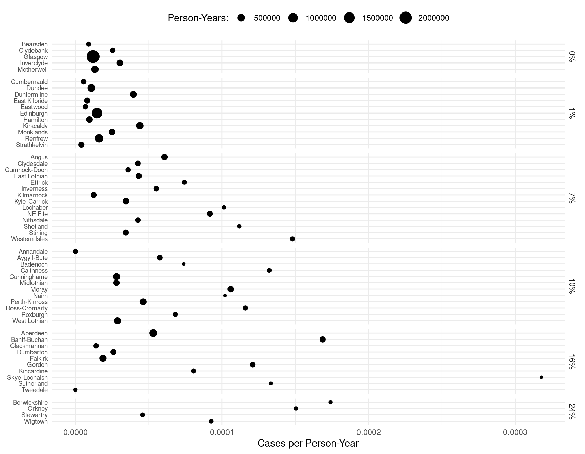
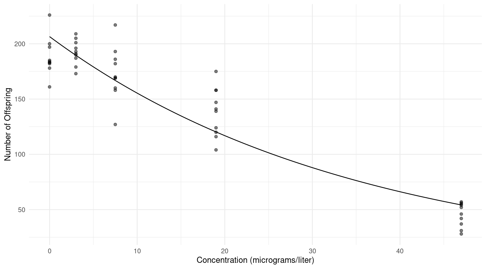
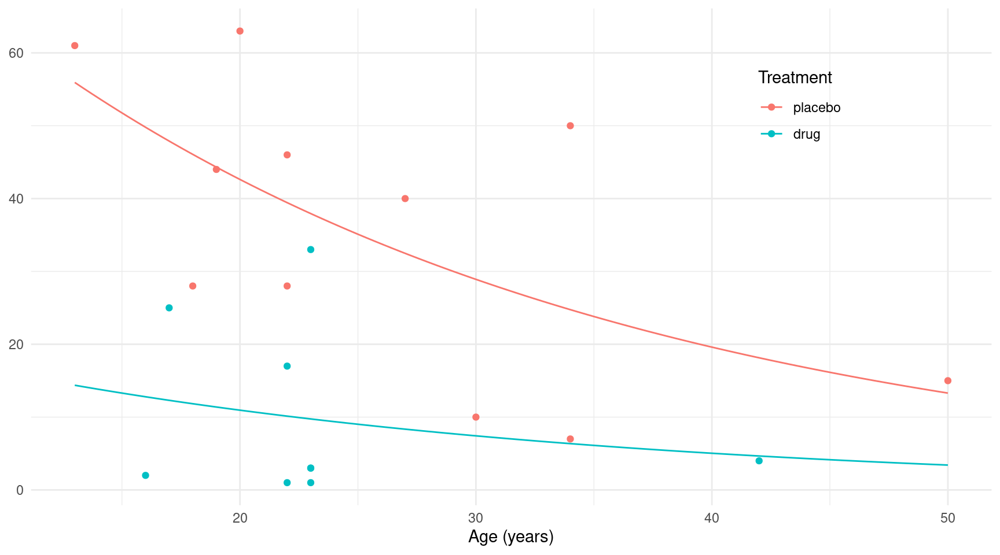
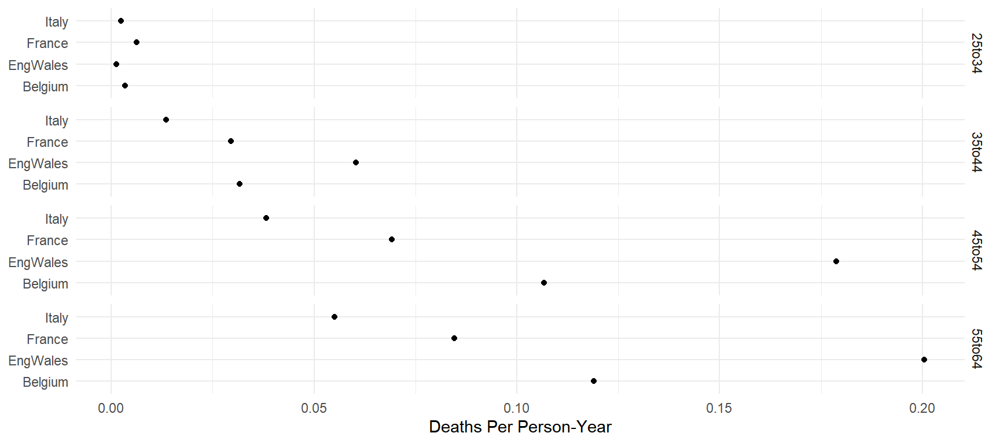
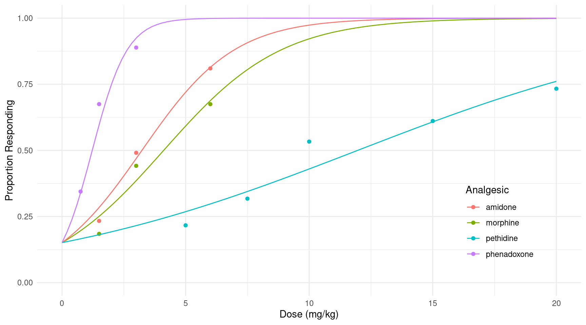

Poisson and Logistic Regression
Statistics 516, Homework 3 (Solutions)
You can also download a PDF copy of this homework assignment.
Lip Cancer in Scotland
The data frame epi.SClip from the epiR
package features data on the incidence of lip cancer in Scotland from
1975 to 1980. The following code processes the data for plotting and
modeling, and shows the first few observations of a new data frame
called lipcancer.1
library(epiR)
data(epi.SClip) # necessary to "load" the data
library(dplyr)
lipcancer <- epi.SClip %>%
mutate(district = factor(district, levels = rev(sort(unique(district))))) %>%
mutate(percent = paste(prop.ag, "%", sep = "")) %>%
mutate(percent = reorder(percent, prop.ag)) %>%
select(district, cases, population, percent)
head(lipcancer) district cases population percent
1 Caithness 11 83190 10%
2 Sutherland 5 37521 16%
3 Ross-Cromarty 15 129271 10%
4 Banff-Buchan 39 231337 16%
5 Nairn 3 29374 10%
6 Skye-Lochalsh 9 28324 16%The data show for each of 56 districts the number of cases of lip cancer, the population (in person-years), and the percent of the population engaged in outdoor activity. Person-years is the sum of the number of years of exposure of all the people living in each district between 1975 to 1980.2 The percent of people involved in outdoor activity (e.g., agriculture, fishing, forestry) is of interest because exposure to sunlight is a risk factor for lip cancer.3 The plot below shows the number of cases of lip cancer per person-year for each district, grouped by percent of the population engaged in outdoor activity. Note that the size of each point is proportional to the number of person-years for that district.
library(ggplot2)
p <- ggplot(lipcancer, aes(y = district, x = cases/population)) +
theme_minimal() + geom_point(aes(size = population)) +
facet_grid(percent ~ ., scales = "free_y", space = "free_y") +
labs(y = NULL, x = "Cases per Person-Year", size = "Person-Years:") +
scale_x_continuous(labels = scales::label_number()) +
theme(axis.text.y = element_text(size = 7), legend.position = "top")
plot(p) The objective here will be to model the relationship between the incidence rate of lip cancer and the percent of the population engaged in outdoor activity using Poisson regression.
Estimate a Poisson regression model for the rate of lip cancer, using the percent of the population engaged in outdoor activity as the only explanatory variable. Note that it will be treated here as a categorical explanatory variable, which will happen automatically since it is stored in the data frame as a character rather than a number. You will not be using
districtas an explanatory variable in your model.4 Be sure to include an offset variable to account for differences in the person-years across districts. Show the parameter estimates and their standard errors using thesummaryfunction so that I can verify that you estimated the model correctly.Solution: We can estimate this model as follows.
m <- glm(cases ~ offset(log(population)) + percent, family = poisson, data = lipcancer) summary(m)$coefficientsEstimate Std. Error z value Pr(>|z|) (Intercept) -11.1471 0.1443 -77.229 0.000e+00 percent1% 0.2239 0.1805 1.240 2.149e-01 percent7% 1.2909 0.1696 7.610 2.732e-14 percent10% 1.2944 0.1708 7.579 3.481e-14 percent16% 1.5005 0.1691 8.875 6.983e-19 percent24% 2.0233 0.2378 8.508 1.764e-17Estimate the expected number of cases of lip cancer per 100K (i.e., 100,000) person-years for each value of the percent of the explanatory variable. But be sure that you set the value of the offset variable to account for the fact that you are estimating the rate per 100K person-years and not per person-year.
Solution: I will show a couple of ways to do this.
trtools::contrast(m, tf = exp, a = list(percent = sort(unique(lipcancer$percent)), population = 100000), cnames = sort(unique(lipcancer$percent)))estimate lower upper 0% 1.442 1.086 1.913 1% 1.803 1.458 2.231 7% 5.242 4.402 6.242 10% 5.260 4.398 6.291 16% 6.465 5.440 7.682 24% 10.903 7.528 15.791library(emmeans) emmeans(m, ~percent, type = "response", offset = log(100000))percent rate SE df asymp.LCL asymp.UCL 0% 1.44 0.208 Inf 1.09 1.91 1% 1.80 0.196 Inf 1.46 2.23 7% 5.24 0.467 Inf 4.40 6.24 10% 5.26 0.480 Inf 4.40 6.29 16% 6.46 0.569 Inf 5.44 7.68 24% 10.90 2.061 Inf 7.53 15.79 Confidence level used: 0.95 Intervals are back-transformed from the log scaleNow suppose we want to show the estimated rate of lip cancer on the plot. This needs to be per person-year, since that is the scale used for the plot. Here is one way to do that.
d <- data.frame(percent = sort(unique(lipcancer$percent)), population = 1) d$yhat <- predict(m, newdata = d, type = "response") p <- ggplot(lipcancer, aes(y = district, x = cases/population)) + theme_minimal() + geom_point(aes(size = population)) + facet_grid(percent ~ ., scales = "free_y", space = "free_y") + labs(y = NULL, x = "Cases per Person-Year", size = "Person-Years:") + scale_x_continuous(labels = scales::label_number()) + theme(axis.text.y = element_text(size = 7), legend.position = "top") + geom_vline(aes(xintercept = yhat), data = d) plot(p)
Estimate five rate ratios to compare the rate of lip cancer at 1%, 7%, 10%, 16%, and 24% versus 0% of the population involved in outdoor activity. Write a sentence or two to interpret each estimated rate ratio in terms of the relationship between the percent of the population involved in outdoor activity and the rate of lip cancer.
Solution: I will show a couple of ways to estimate these rate ratios.
trtools::contrast(m, tf = exp, a = list(percent = c("1%","7%","10%","16%","24%"), population = 1), b = list(percent = "0%", population = 1), cnames = paste(c("1%","7%","10%","16%","24%"), "vs 0%"))estimate lower upper 1% vs 0% 1.251 0.8781 1.782 7% vs 0% 3.636 2.6076 5.070 10% vs 0% 3.649 2.6108 5.099 16% vs 0% 4.484 3.2193 6.246 24% vs 0% 7.563 4.7455 12.053emmeans::contrast(emmeans(m, ~percent, offset = log(1), type = "response"), method = "trt.vs.ctrl", ref = 1, infer = TRUE, adjust = "none")contrast ratio SE df asymp.LCL asymp.UCL null z.ratio p.value 1% / 0% 1.25 0.226 Inf 0.878 1.78 1 1.240 0.2149 7% / 0% 3.64 0.617 Inf 2.608 5.07 1 7.610 <.0001 10% / 0% 3.65 0.623 Inf 2.611 5.10 1 7.579 <.0001 16% / 0% 4.48 0.758 Inf 3.219 6.25 1 8.875 <.0001 24% / 0% 7.56 1.798 Inf 4.745 12.05 1 8.508 <.0001 Confidence level used: 0.95 Intervals are back-transformed from the log scale Tests are performed on the log scaleNote that the value of the offset does not matter here since we are looking at ratios. We can interpret these as follows.
The rate of lip cancer is in a district with a percent outdoor activity of 1% is about 1.25 times that of a district with an outdoor activity of 0% (i.e., about 25% higher).
The rate of lip cancer is in a district with a percent outdoor activity of 7% is about 3.64 times that of a district with an outdoor activity of 0% (i.e., about 264% higher).
The rate of lip cancer is in a district with a percent outdoor activity of 10% is about 3.65 times that of a district with an outdoor activity of 0% (i.e., about 265% higher).
The rate of lip cancer is in a district with a percent outdoor activity of 16% is about 4.48 times that of a district with an outdoor activity of 0% (i.e., about 348% higher).
The rate of lip cancer is in a district with a percent outdoor activity of 24% is about 7.59 times that of a district with an outdoor activity of 0% (i.e., about 659% higher).
Alternatively we can “flip” the rate ratios in the following way.
trtools::contrast(m, tf = exp, a = list(percent = "0%", population = 1), b = list(percent = c("1%","7%","10%","16%","24%"), population = 1), cnames = paste("0% vs", c("1%","7%","10%","16%","24%")))estimate lower upper 0% vs 1% 0.7994 0.56115 1.1388 0% vs 7% 0.2750 0.19725 0.3835 0% vs 10% 0.2741 0.19611 0.3830 0% vs 16% 0.2230 0.16011 0.3106 0% vs 24% 0.1322 0.08296 0.2107emmeans::contrast(emmeans(m, ~percent, offset = log(1), type = "response"), method = "trt.vs.ctrl", ref = 1, infer = TRUE, adjust = "none", reverse = TRUE)contrast ratio SE df asymp.LCL asymp.UCL null z.ratio p.value 0% / 1% 0.799 0.1443 Inf 0.561 1.139 1 -1.240 0.2149 0% / 7% 0.275 0.0466 Inf 0.197 0.384 1 -7.610 <.0001 0% / 10% 0.274 0.0468 Inf 0.196 0.383 1 -7.579 <.0001 0% / 16% 0.223 0.0377 Inf 0.160 0.311 1 -8.875 <.0001 0% / 24% 0.132 0.0314 Inf 0.083 0.211 1 -8.508 <.0001 Confidence level used: 0.95 Intervals are back-transformed from the log scale Tests are performed on the log scaleWe can interpret these rate ratios as follows.
The rate of lip cancer in a district with a percent of outdoor activity of 0% is about 0.8 times that of a district with a percent of outdoor activity of 1% (i.e., about 20% lower).
The rate of lip cancer in a district with a percent of outdoor activity of 0% is about 0.275 times that of a district with a percent of outdoor activity of 7% (i.e., about 72.5% lower).
The rate of lip cancer in a district with a percent of outdoor activity of 0% is about 0.274 times that of a district with a percent of outdoor activity of 10% (i.e., about 72.6% lower).
The rate of lip cancer in a district with a percent of outdoor activity of 0% is about 0.22 times that of a district with a percent of outdoor activity of 16% (i.e., about 78% lower).
The rate of lip cancer in a district with a percent of outdoor activity of 0% is about 0.13 times that of a district with a percent of outdoor activity of 24% (i.e., about 87% lower).
Treatment of Familial Adenomatous Polyposis
Familial
adenomatous polyposis (FAP) is a rare genetic condition that causes
polyps to form in the large intestine and rectum. These polyps are
likely to later become cancerous. Data from a study that investigated
the effectiveness of a non-steroidal anti-inflammatory drug for treating
FAP are in the data frame polyps in the package
HSAUR3.5
library(HSAUR3)
polyps number treat age
1 63 placebo 20
2 2 drug 16
3 28 placebo 18
4 17 drug 22
5 61 placebo 13
6 1 drug 23
7 7 placebo 34
8 15 placebo 50
9 44 placebo 19
10 25 drug 17
11 3 drug 23
12 28 placebo 22
13 10 placebo 30
14 40 placebo 27
15 33 drug 23
16 46 placebo 22
17 50 placebo 34
18 3 drug 23
19 1 drug 22
20 4 drug 42The plots below show the raw data.
library(ggplot2)
library(cowplot)
p1 <- ggplot(polyps, aes(x = treat, y = number, fill = treat)) + theme_minimal() +
geom_dotplot(binaxis = "y", stackdir = "center", show.legend = FALSE, binwidth = 1) +
labs(x = "Treatment", y = "Number of Polyps") + ylim(0, 63)
p2 <- ggplot(polyps, aes(x = age, y = number, color = treat)) + theme_minimal() +
geom_point() + labs(x = "Age (years)", y = NULL, color = "Treatment") +
theme(legend.position = c(0.8, 0.8)) + ylim(0, 63)
plot_grid(p1, p2, rel_widths = c(1, 3)) Twenty subjects with FAP were randomly assigned to either a treatment
(drug) or control (placebo) group. After twelve months the polyps in
each subject were counted. The focus here is on the statistical
relationship between the number of polyps and the treatment condition.
But subject age can be used as a covariate since the number of polyps
may depend on age.6 Here you will use Poisson regression to
make inferences about the treatment effect as well as the effect of age
on the number of polyps for people with FAP.
Twenty subjects with FAP were randomly assigned to either a treatment
(drug) or control (placebo) group. After twelve months the polyps in
each subject were counted. The focus here is on the statistical
relationship between the number of polyps and the treatment condition.
But subject age can be used as a covariate since the number of polyps
may depend on age.6 Here you will use Poisson regression to
make inferences about the treatment effect as well as the effect of age
on the number of polyps for people with FAP.
Estimate a Poisson regression model with the number of polyps as the response variable and only treatment as the explanatory variable (do not include age yet). Report the parameter estimates and their standard errors using
summaryso that I can verify that you estimated the model correctly. Estimate the rate ratio for the effect of the treatment, and write a sentence or two to interpret this rate ratio in terms of the effect of the treatment on the number of polyps. Finally estimate the expected number of polyps for each treatment group.Solution: We can estimate this model as follows.
m <- glm(number ~ treat, family = poisson, data = polyps) summary(m)$coefficientsEstimate Std. Error z value Pr(>|z|) (Intercept) 3.573 0.05051 70.75 0.000e+00 treatdrug -1.282 0.11742 -10.92 9.446e-28We can estimate the rate ratio as follows.
trtools::contrast(m, tf = exp, a = list(treat = "drug"), b = list(treat = "placebo"))estimate lower upper 0.2775 0.2204 0.3493Note that for this model we can also estimate it by just exponentiating the parameters.
exp(cbind(coef(m), confint(m)))2.5 % 97.5 % (Intercept) 35.6364 32.2240 39.2814 treatdrug 0.2775 0.2192 0.3475We can interpret this rate ratio as showing us that the expected number of polyps for patients given the drug is about 0.28 times that of patients given the placebo (i.e., about 72% lower). We can also “flip” the rate ratio as follows.
trtools::contrast(m, tf = exp, a = list(treat = "placebo"), b = list(treat = "drug"))estimate lower upper 3.604 2.863 4.536This rate ratio can be interpreted by saying that the expected number of polyps for patients given the placebo is about 3.6 times higher than patients given the drug (i.e., about 260% higher). Here is how to estimate these two rate ratios using the emmeans package.
pairs(emmeans(m, ~treat, type = "response"), infer = TRUE)contrast ratio SE df asymp.LCL asymp.UCL null z.ratio p.value placebo / drug 3.6 0.423 Inf 2.86 4.54 1 10.918 <.0001 Confidence level used: 0.95 Intervals are back-transformed from the log scale Tests are performed on the log scalepairs(emmeans(m, ~treat, type = "response"), infer = TRUE, reverse = TRUE)contrast ratio SE df asymp.LCL asymp.UCL null z.ratio p.value drug / placebo 0.277 0.0326 Inf 0.22 0.349 1 -10.918 <.0001 Confidence level used: 0.95 Intervals are back-transformed from the log scale Tests are performed on the log scaleFinally here is how we can estimate the expected number of polyps for each treatment condition.
trtools::contrast(m, tf = exp, a = list(treat = c("drug","placebo")), cnames = c("drug","placebo"))estimate lower upper drug 9.889 8.034 12.17 placebo 35.636 32.278 39.34emmeans(m, ~treat, type = "response")treat rate SE df asymp.LCL asymp.UCL placebo 35.64 1.80 Inf 32.28 39.3 drug 9.89 1.05 Inf 8.03 12.2 Confidence level used: 0.95 Intervals are back-transformed from the log scaleEstimate a Poisson regression model with the number of polyps as the response variable and both treatment and age as the explanatory variables. Do not include an interaction between treatment and age.7 Estimate two rate ratios — one for the effect of the treatment and one for the effect of age.8 Write a sentence or two that interprets each rate ratio in terms of the relationship between the explanatory variable and the number of polyps. Also estimate the expected number of polyps for a 30-year old person who receives the treatment, and for someone of the same age that does not receive the treatment.
Solution: We can estimate the model as follows.
m <- glm(number ~ treat + age, family = poisson, data = polyps) summary(m)$coefficientsEstimate Std. Error z value Pr(>|z|) (Intercept) 4.52902 0.146872 30.84 8.487e-209 treatdrug -1.35908 0.117643 -11.55 7.164e-31 age -0.03883 0.005955 -6.52 7.016e-11We can estimate the rate ratio for the treatment variable as follows.
trtools::contrast(m, tf = exp, a = list(treat = "drug", age = c(20,30,40)), b = list(treat = "placebo", age = c(20,30,40)), cnames = c("@20","@30","@40"))estimate lower upper @20 0.2569 0.204 0.3235 @30 0.2569 0.204 0.3235 @40 0.2569 0.204 0.3235Note that the age does not matter since there is no interaction between it and treatment, but I included several values to show this. This shows that the expected number of polyps for a subject given the drug is about 0.26 times that of one of the same age but given the placebo (i.e., about 0.74% lower). Here is the “flipped” rate ratio.
trtools::contrast(m, tf = exp, a = list(treat = "placebo", age = c(20,30,40)), b = list(treat = "drug", age = c(20,30,40)), cnames = c("@20","@30","@40"))estimate lower upper @20 3.893 3.091 4.902 @30 3.893 3.091 4.902 @40 3.893 3.091 4.902So the expected number of polyps for a patient given the placebo is about 3.9 times higher than one of the same age but given the drug (i.e., about 290% higher). We can estimate the rate ratio for the effect of as as follows.
trtools::contrast(m, tf = exp, a = list(treat = c("drug","placebo"), age = 30), b = list(treat = c("drug","placebo"), age = 29), cnames = c("drug","placebo"))estimate lower upper drug 0.9619 0.9508 0.9732 placebo 0.9619 0.9508 0.9732Because there is no interaction involving the treatment, the value of the treatment variable does not affect the rate ratio. This rate ratio can be interpreted as showing that for every year of age the expected number of polyps decreases by a factor of about 0.96 (i.e., about 4%). The above rate ratios can be estimated using the emmeans package as follows.
pairs(emmeans(m, ~treat|age, at = list(age = c(20,30,40)), type = "response"), infer = TRUE)age = 20: contrast ratio SE df asymp.LCL asymp.UCL null z.ratio p.value placebo / drug 3.89 0.458 Inf 3.09 4.9 1 11.553 <.0001 age = 30: contrast ratio SE df asymp.LCL asymp.UCL null z.ratio p.value placebo / drug 3.89 0.458 Inf 3.09 4.9 1 11.553 <.0001 age = 40: contrast ratio SE df asymp.LCL asymp.UCL null z.ratio p.value placebo / drug 3.89 0.458 Inf 3.09 4.9 1 11.553 <.0001 Confidence level used: 0.95 Intervals are back-transformed from the log scale Tests are performed on the log scalepairs(emmeans(m, ~treat, type = "response"), infer = TRUE)contrast ratio SE df asymp.LCL asymp.UCL null z.ratio p.value placebo / drug 3.89 0.458 Inf 3.09 4.9 1 11.553 <.0001 Confidence level used: 0.95 Intervals are back-transformed from the log scale Tests are performed on the log scalepairs(emmeans(m, ~treat|age, at = list(age = c(20,30,40)), type = "response"), infer = TRUE, reverse = TRUE)age = 20: contrast ratio SE df asymp.LCL asymp.UCL null z.ratio p.value drug / placebo 0.257 0.0302 Inf 0.204 0.324 1 -11.553 <.0001 age = 30: contrast ratio SE df asymp.LCL asymp.UCL null z.ratio p.value drug / placebo 0.257 0.0302 Inf 0.204 0.324 1 -11.553 <.0001 age = 40: contrast ratio SE df asymp.LCL asymp.UCL null z.ratio p.value drug / placebo 0.257 0.0302 Inf 0.204 0.324 1 -11.553 <.0001 Confidence level used: 0.95 Intervals are back-transformed from the log scale Tests are performed on the log scalepairs(emmeans(m, ~treat, type = "response"), infer = TRUE, reverse = TRUE)contrast ratio SE df asymp.LCL asymp.UCL null z.ratio p.value drug / placebo 0.257 0.0302 Inf 0.204 0.324 1 -11.553 <.0001 Confidence level used: 0.95 Intervals are back-transformed from the log scale Tests are performed on the log scalepairs(emmeans(m, ~age|treat, at = list(age = c(30,29)), type = "response"), infer = TRUE)treat = placebo: contrast ratio SE df asymp.LCL asymp.UCL null z.ratio p.value age30 / age29 0.962 0.00573 Inf 0.951 0.973 1 -6.520 <.0001 treat = drug: contrast ratio SE df asymp.LCL asymp.UCL null z.ratio p.value age30 / age29 0.962 0.00573 Inf 0.951 0.973 1 -6.520 <.0001 Confidence level used: 0.95 Intervals are back-transformed from the log scale Tests are performed on the log scalepairs(emmeans(m, ~age, at = list(age = c(30,29)), type = "response"), infer = TRUE)contrast ratio SE df asymp.LCL asymp.UCL null z.ratio p.value age30 / age29 0.962 0.00573 Inf 0.951 0.973 1 -6.520 <.0001 Results are averaged over the levels of: treat Confidence level used: 0.95 Intervals are back-transformed from the log scale Tests are performed on the log scaleFinally here are some ways to estimate the expected number of polyps for a 30-year old patient in each treatment condition.
trtools::contrast(m, tf = exp, a = list(treat = c("drug","placebo"), age = 30), cnames = c("drug","placebo"))estimate lower upper drug 7.426 5.912 9.329 placebo 28.908 25.455 32.829emmeans(m, ~treat|age, at = list(age = 30), type = "response")age = 30: treat rate SE df asymp.LCL asymp.UCL placebo 28.91 1.876 Inf 25.45 32.83 drug 7.43 0.864 Inf 5.91 9.33 Confidence level used: 0.95 Intervals are back-transformed from the log scaleUsing the model with both treatment and age as explanatory variables, plot two curves showing the estimated expected number of polyps as a function of treatment and age. Your plot should also include the raw data like the plot on the right-hand side above. You can use the code above that creates the object called
p2as the basis of your plot.Solution: Here is the plot for the estimated model.
d <- expand.grid(treat = c("drug","placebo"), age = seq(13, 50, length = 100)) d$yhat <- predict(m, newdata = d, type = "response") p <- ggplot(polyps, aes(x = age, y = number, color = treat)) + theme_minimal() + geom_point() + labs(x = "Age (years)", y = NULL, color = "Treatment") + theme(legend.position = c(0.8, 0.8)) + geom_line(aes(y = yhat), data = d) plot(p)
The model you estimated with both treatment and age as explanatory variables can be written as the nonlinear model \[ E(Y_i) = \exp(\beta_0 + \beta_1x_{i1} + \beta_2x_{i2}), \] where \(Y_i\) is the number of polyps, and \(x_{i1}\) and \(x_{i2}\) represent treatment and age (although which represents treatment and which represents age will depend on the order that you specified the explanatory variables in the model formula argument of
glm). Estimate the model above using thenlsfunction and show the parameter estimates and standard errors using thesummaryfunction. These should be similar but not equal to what you got usingglm(note that you can use the estimates fromglmas your starting values). The Poisson distribution assumes a variance structure such that \(\text{Var}(Y_i) = E(Y_i)\), which suggests that if dealt with the heteroscedasticity using weights then we would use weights of \(w_i = 1/E(Y_i)\) which can be approximated as \(w_i = 1/\hat{y}_i\), where \(\hat{y}_i\) is the predicted value. Now estimate the model above again usingnls, but use iteratively weighted least squares with the weights defined as above. Report the parameter estimates and their standard errors usingsummary. If you do this correctly the estimates should be the same as what you got fromglm, but the standard errors will not necessarily be the same.9 Note: This problem is extra credit for students in Stat 436, but is required for students in Stat 516.Solution: First I will estimate the model without using weights.
m <- nls(number ~ exp(b0 + b1 * (treat == "drug") + b2 * age), data = polyps, start = list(b0 = 4.5, b1 = -1.36, b2 = -0.04)) summary(m)$coefficientsEstimate Std. Error t value Pr(>|t|) b0 4.5674 0.37453 12.195 7.861e-10 b1 -1.3582 0.48022 -2.828 1.160e-02 b2 -0.0406 0.01707 -2.378 2.938e-02Now I will estimate it using iteratively weighted least squares.
polyps$w <- 1 for (i in 1:10) { m <- nls(number ~ exp(b0 + b1 * (treat == "drug") + b2 * age), data = polyps, start = list(b0 = 4.5, b1 = -1.36, b2 = -0.04), weights = w) polyps$w <- 1 / predict(m) } summary(m)$coefficientsEstimate Std. Error t value Pr(>|t|) b0 4.52902 0.48106 9.415 3.720e-08 b1 -1.35908 0.38533 -3.527 2.587e-03 b2 -0.03883 0.01951 -1.991 6.284e-02Notice that the estimates are the same as when using
glmto estimate a Poisson regression model, but the standard errors are different.m <- glm(number ~ treat + age, family = poisson, data = polyps) summary(m)$coefficientsEstimate Std. Error z value Pr(>|z|) (Intercept) 4.52902 0.146872 30.84 8.487e-209 treatdrug -1.35908 0.117643 -11.55 7.164e-31 age -0.03883 0.005955 -6.52 7.016e-11However, using iteratively weighted least squares here is equivalent to using a quasi-likelihood approach with
family = quasipoisson.m <- glm(number ~ treat + age, family = quasipoisson, data = polyps) summary(m)$coefficientsEstimate Std. Error t value Pr(>|t|) (Intercept) 4.52902 0.48106 9.415 3.720e-08 treatdrug -1.35908 0.38533 -3.527 2.587e-03 age -0.03883 0.01951 -1.991 6.284e-02Note that both the estimates and the standard errors are the same as what was obtained when using iteratively weighted least squares.
Analgesic Potency
The data frame analgesics in the
trtools package is from a study comparing four
analgesics at varying doses.10 Here are the data in aggregated form.
library(trtools)
analgesics analgesic dose responding tested
1 morphine 1.50 19 103
2 morphine 3.00 53 120
3 morphine 6.00 83 123
4 amidone 1.50 14 60
5 amidone 3.00 54 110
6 amidone 6.00 81 100
7 pethidine 5.00 13 60
8 pethidine 7.50 27 85
9 pethidine 10.00 32 60
10 pethidine 15.00 55 90
11 pethidine 20.00 44 60
12 phenadoxone 0.75 31 90
13 phenadoxone 1.50 54 80
14 phenadoxone 3.00 80 90Mice were randomly assigned one of four analgesics (morphine hydrochloride, amidone, phenadoxone, or pethidine hydrochloride) at one of nine doses. Each mouse was administered a number of electric shocks until a pain response (a squeak) was elicited. This was done before the administration of the analgesic (as a baseline) and after. A mouse was recorded as “responding” to an analgesic if at least four more shocks were required to elicit a pain response than before the analgesic was administered. The plot below shows the proportion of mice responding to the analgesic.
library(ggplot2)
p <- ggplot(analgesics, aes(x = dose, y = responding/tested, color = analgesic)) +
theme_minimal() + geom_point() + theme(legend.position = c(0.85,0.25)) + ylim(0, 1) +
labs(x = "Dose (mg/kg)", y = "Proportion Responding", color = "Analgesic")
plot(p) The goal here is to model how the mice respond to the different analgesics using logistic regression.
Estimate a logistic regression model for the proportion of mice responding to the analgesics, using both the type of analgesic and the dose as explanatory variables. This model will include an interaction so that the odds ratio for dose depends on the type of analgesic used, but will also include a constraint that the probability of a response is the same at a dose of zero (since then the type of analgesic is irrelevant). To do this, specify the right-hand side of the model formula argument of the
glmfunction as simplyanalgesic:dose. To verify that you estimated the model correctly, show the parameter estimates and their standard errors usingsummary.Solution: We can estiamte this model as follows.
m <- glm(cbind(responding, tested - responding) ~ analgesic:dose, family = binomial, data = analgesics) summary(m)$coefficientsEstimate Std. Error z value Pr(>|z|) (Intercept) -1.7236 0.14566 -11.833 2.628e-32 analgesicamidone:dose 0.5336 0.04878 10.937 7.649e-28 analgesicmorphine:dose 0.4193 0.04255 9.853 6.636e-23 analgesicpethidine:dose 0.1442 0.01411 10.216 1.676e-24 analgesicphenadoxone:dose 1.4110 0.12569 11.226 3.046e-29Using the model you estimated above, plot the estimated expected proportion of responses (which is also the estimated probability of a response) as a function of type of analgesic used and the dose. This plot should also include the observed proportions as shown above.
Solution: Here is a plot of the estimated model with the raw data.
d <- expand.grid(analgesic = unique(analgesics$analgesic), dose = seq(0, 20, length = 100)) d$yhat <- predict(m, newdata = d, type = "response") p <- ggplot(analgesics, aes(x = dose, y = responding/tested, color = analgesic)) + theme_minimal() + geom_point() + theme(legend.position = c(0.85,0.25)) + ylim(0, 1) + labs(x = "Dose (mg/kg)", y = "Proportion Responding", color = "Analgesic") + geom_line(aes(y = yhat), data = d) plot(p)
Estimate the probability of a response for each analgesic at a dose of 0 mg/kg, and again at a dose of 5 mg/kg. Note that you should find that the estimates at 0 mg/kg are the same for the four analgesics.
Solution: These probabilities can be estimated as follows.
drug <- sort(unique(analgesics$analgesic)) trtools::contrast(m, tf = plogis, a = list(analgesic = drug, dose = 0), cnames = paste(drug, "at 0 mg/kg"))estimate lower upper amidone at 0 mg/kg 0.1514 0.1182 0.1918 morphine at 0 mg/kg 0.1514 0.1182 0.1918 pethidine at 0 mg/kg 0.1514 0.1182 0.1918 phenadoxone at 0 mg/kg 0.1514 0.1182 0.1918trtools::contrast(m, tf = plogis, a = list(analgesic = drug, dose = 5), cnames = paste(drug, "at 5 mg/kg"))estimate lower upper amidone at 5 mg/kg 0.7200 0.6453 0.7842 morphine at 5 mg/kg 0.5921 0.5236 0.6573 pethidine at 5 mg/kg 0.2684 0.2308 0.3096 phenadoxone at 5 mg/kg 0.9952 0.9861 0.9983Note that creating
drughere lets me avoid having to type out all of the analgesics each time. Here is another way to do this.emmeans(m, ~analgesic|dose, at = list(dose = c(0,5)), type = "response")dose = 0: analgesic prob SE df asymp.LCL asymp.UCL amidone 0.151 0.01871 Inf 0.118 0.192 morphine 0.151 0.01871 Inf 0.118 0.192 pethidine 0.151 0.01871 Inf 0.118 0.192 phenadoxone 0.151 0.01871 Inf 0.118 0.192 dose = 5: analgesic prob SE df asymp.LCL asymp.UCL amidone 0.720 0.03558 Inf 0.645 0.784 morphine 0.592 0.03431 Inf 0.524 0.657 pethidine 0.268 0.02013 Inf 0.231 0.310 phenadoxone 0.995 0.00261 Inf 0.986 0.998 Confidence level used: 0.95 Intervals are back-transformed from the logit scaleEstimate the odds ratio for the effect of increasing dose by one unit for each of the four analgesics. For each odds ratio, write a sentence or two that interprets the odds ratio in terms of the relationship between dose and the response.
Solution: Here are a couple of ways to estimate these odds ratios.
drug <- sort(unique(analgesics$analgesic)) trtools::contrast(m, tf = exp, a = list(analgesic = drug, dose = 1), b = list(analgesic = drug, dose = 0), cnames = drug)estimate lower upper amidone 1.705 1.550 1.876 morphine 1.521 1.399 1.653 pethidine 1.155 1.124 1.187 phenadoxone 4.100 3.205 5.245pairs(emmeans(m, ~dose|analgesic, at = list(dose = c(1,0)), type = "response"), infer = TRUE)analgesic = amidone: contrast odds.ratio SE df asymp.LCL asymp.UCL null z.ratio p.value dose1 / dose0 1.71 0.0832 Inf 1.55 1.88 1 10.937 <.0001 analgesic = morphine: contrast odds.ratio SE df asymp.LCL asymp.UCL null z.ratio p.value dose1 / dose0 1.52 0.0647 Inf 1.40 1.65 1 9.853 <.0001 analgesic = pethidine: contrast odds.ratio SE df asymp.LCL asymp.UCL null z.ratio p.value dose1 / dose0 1.16 0.0163 Inf 1.12 1.19 1 10.216 <.0001 analgesic = phenadoxone: contrast odds.ratio SE df asymp.LCL asymp.UCL null z.ratio p.value dose1 / dose0 4.10 0.5153 Inf 3.21 5.25 1 11.226 <.0001 Confidence level used: 0.95 Intervals are back-transformed from the log odds ratio scale Tests are performed on the log odds ratio scaleWe can interpret these four odds ratios as follows.
For every unit increase in dose, the odds of a response increases by a factor of about 1.71 (71%) when using amidone, 1.52 (52%) when using morphine hydrochloride, 1.16 (16%) when using pethidine hydrochloride, and 4.1 (310%) when using phenadoxone.
It can be seen from the output of
summaryfor the model you estimated above that it can be written as \[ O_i = \begin{cases} e^{\beta_0}e^{\beta_1d_i}, & \text{if the analgesic is amidone}, \\ e^{\beta_0}e^{\beta_2d_i}, & \text{if the analgesic is morphine hydrochloride}, \\ e^{\beta_0}e^{\beta_3d_i}, & \text{if the analgesic is pethidine}, \\ e^{\beta_0}e^{\beta_4d_i}, & \text{if the analgesic is phenadoxone hydrochloride}, \end{cases} \] where \(O_i\) is the odds of responding and \(d_i\) is the dose of the analgesic. The odds ratios for the effect of a one unit increase in dose for amidone, morphine hydrochloride, pethidine, and phenadoxone hydrochloride can be shown to be equal to \(e^{\beta_1}\), \(e^{\beta_2}\), \(e^{\beta_3}\), and \(e^{\beta_4}\), respectively. You estimated these odds ratios in the previous problem. Now consider the problem of testing if the odds ratio for, say, morphine hydrochloride is different from that for each of the other three analgesics. This would amount to testing each of the null hypotheses \(\beta_1 - \beta_2 = 0\), \(\beta_3 - \beta_2 = 0\), and \(\beta_4 - \beta_2 = 0\). This can be done several ways. One is to use thelinconfunction from the trtools package. But it can also be done usingcontrastfrom the same package, or by using functions from the emmeans package. Test each of the three null hypotheses using a significance level of \(\alpha\) = 0.05. Be sure to state your conclusion. Note: This problem is extra credit for students in Stat 436, but is required for students in Stat 516.Solution: Here is how we can do it using
lincon.lincon(m, a = c(0, 1, -1, 0, 0)) # b1 - b2 = 0estimate se lower upper tvalue df pvalue (0,1,-1,0,0),0 0.1143 0.04502 0.02605 0.2025 2.539 Inf 0.01113lincon(m, a = c(0, 0, -1, 1, 0)) # b3 - b2 = 0estimate se lower upper tvalue df pvalue (0,0,-1,1,0),0 -0.2751 0.0364 -0.3465 -0.2038 -7.558 Inf 4.098e-14lincon(m, a = c(0, 0, -1, 0, 1)) # b4 - b2 = 0estimate se lower upper tvalue df pvalue (0,0,-1,0,1),0 0.9917 0.1112 0.7737 1.21 8.916 Inf 4.822e-19Note that all three null hypotheses are rejected at a significance level of 0.05. Using
contrastis a bit trickier. Here I will just show how to do it to test \(\beta_1 - \beta_2 = 0\) (i.e., comparing amidone and morphine).trtools::contrast(m, a = list(analgesic = "amidone", dose = 1), b = list(analgesic = "amidone", dose = 0), u = list(analgesic = "morphine", dose = 1), v = list(analgesic = "morphine", dose = 0))estimate se lower upper tvalue df pvalue 0.1143 0.04502 0.02605 0.2025 2.539 Inf 0.01113Using the emmeans package we can compare all pairs of analgesics.
pairs(pairs(emmeans(m, ~dose|analgesic, at = list(dose = c(1,0)))), by = NULL, adjust = "none")contrast estimate SE df z.ratio p.value (dose1 - dose0 amidone) - (dose1 - dose0 morphine) 0.114 0.0450 Inf 2.539 0.0111 (dose1 - dose0 amidone) - (dose1 - dose0 pethidine) 0.389 0.0430 Inf 9.064 <.0001 (dose1 - dose0 amidone) - (dose1 - dose0 phenadoxone) -0.877 0.1121 Inf -7.826 <.0001 (dose1 - dose0 morphine) - (dose1 - dose0 pethidine) 0.275 0.0364 Inf 7.558 <.0001 (dose1 - dose0 morphine) - (dose1 - dose0 phenadoxone) -0.992 0.1112 Inf -8.916 <.0001 (dose1 - dose0 pethidine) - (dose1 - dose0 phenadoxone) -1.267 0.1193 Inf -10.623 <.0001 Results are given on the log odds ratio (not the response) scale.It is possible to target certain comparisons.
emmeans::contrast(pairs(emmeans(m, ~dose|analgesic, at = list(dose = c(1,0)))), method = "trt.vs.ctrl", by = NULL, ref = 2, adjust = "none")contrast estimate SE df z.ratio p.value (dose1 - dose0 amidone) - (dose1 - dose0 morphine) 0.114 0.0450 Inf 2.539 0.0111 (dose1 - dose0 pethidine) - (dose1 - dose0 morphine) -0.275 0.0364 Inf -7.558 <.0001 (dose1 - dose0 phenadoxone) - (dose1 - dose0 morphine) 0.992 0.1112 Inf 8.916 <.0001 Results are given on the log odds ratio (not the response) scale.Here is another approach using the
emtrendsfunction. First I will show all possible pairwise comparisons and then only those comparing against morphine.pairs(emtrends(m, ~analgesic, var = "dose"), adjust = "none")contrast estimate SE df z.ratio p.value amidone - morphine 0.114 0.0450 Inf 2.539 0.0111 amidone - pethidine 0.389 0.0430 Inf 9.064 <.0001 amidone - phenadoxone -0.877 0.1121 Inf -7.826 <.0001 morphine - pethidine 0.275 0.0364 Inf 7.558 <.0001 morphine - phenadoxone -0.992 0.1112 Inf -8.916 <.0001 pethidine - phenadoxone -1.267 0.1193 Inf -10.623 <.0001emmeans::contrast(emtrends(m, ~analgesic, var = "dose"), method = "trt.vs.ctrl", ref = 2, adjust = "none")contrast estimate SE df z.ratio p.value amidone - morphine 0.114 0.0450 Inf 2.539 0.0111 pethidine - morphine -0.275 0.0364 Inf -7.558 <.0001 phenadoxone - morphine 0.992 0.1112 Inf 8.916 <.0001Here is another approach. Consider that if, for example, \(\beta_1 - \beta_2 = 0\) then the expected response is the same for amidone and morphine hydrochloride for any dose. So we can actually test the null hypothesis by testing the difference in the expected response between two analgesics for any given dose (other than zero where they are the same for this model).
trtools::contrast(m, a = list(analgesic = c("amidone","pethidine","phenadoxone"), dose = 5), b = list(analgesic = "morphine", dose = 5), cnames = c("amidone versus morphine", "pethdine versus morphine", "phenadoxone versus morphine"))estimate se lower upper tvalue df pvalue amidone versus morphine 0.5715 0.2251 0.1302 1.013 2.539 Inf 1.113e-02 pethdine versus morphine -1.3756 0.1820 -1.7323 -1.019 -7.558 Inf 4.098e-14 phenadoxone versus morphine 4.9586 0.5561 3.8686 6.049 8.916 Inf 4.822e-19emmeans::contrast(emmeans(m, ~analgesic|dose, at = list(dose = 5)), method = "trt.vs.ctrl", ref = 2, adjust = "none")dose = 5: contrast estimate SE df z.ratio p.value amidone - morphine 0.571 0.225 Inf 2.539 0.0111 pethidine - morphine -1.376 0.182 Inf -7.558 <.0001 phenadoxone - morphine 4.959 0.556 Inf 8.916 <.0001 Results are given on the log odds ratio (not the response) scale.Note that since we are just testing the differences between odds ratios there is no need to use
tf = expinlinconorcontrast, or to usetype = "response"with the emmeans package.Here is another approach using a reparameterization of the model.
analgesics$analgesic <- relevel(factor(analgesics$analgesic), ref = "morphine") m <- glm(cbind(responding, tested - responding) ~ dose + dose:analgesic, family = binomial, data = analgesics) summary(m)$coefficientsEstimate Std. Error z value Pr(>|z|) (Intercept) -1.7236 0.14566 -11.833 2.628e-32 dose 0.4193 0.04255 9.853 6.636e-23 dose:analgesicamidone 0.1143 0.04502 2.539 1.113e-02 dose:analgesicpethidine -0.2751 0.03640 -7.558 4.098e-14 dose:analgesicphenadoxone 0.9917 0.11123 8.916 4.822e-19This model can be written as \[ O_i = \begin{cases} e^{\beta_0}e^{(\beta_1 + \beta_2)d_i}, & \text{if the analgesic is amidone}, \\ e^{\beta_0}e^{\beta_1 d_i}, & \text{if the analgesic is morphine hydrochloride}, \\ e^{\beta_0}e^{(\beta_1 + \beta_3)d_i}, & \text{if the analgesic is pethidine}, \\ e^{\beta_0}e^{(\beta_1 + \beta_4)d_i}, & \text{if the analgesic is phenadoxone hydrochloride}, \end{cases} \] so the hypotheses are now written as \(\beta_2 = 0\), \(\beta_3 = 0\), and \(\beta_4 = 0\). These can be tested just using the output from
summary.Here is one more approach, but this time using a likelihood ratio test. Here I will demonstrate it for testing the null hypothesis \(\beta_1 - \beta_2 = 0\). To do this we need to specify a null model that is implied by the null hypothesis. In that model there is no distinction between amidone or morphine hydrochloride. To do this we can create a new variable by combining two levels.
library(forcats) analgesics <- analgesics %>% mutate(adrug = fct_collapse(analgesic, amidone_or_morphine = c("amidone","morphine"), )) analgesicsanalgesic dose responding tested adrug 1 morphine 1.50 19 103 amidone_or_morphine 2 morphine 3.00 53 120 amidone_or_morphine 3 morphine 6.00 83 123 amidone_or_morphine 4 amidone 1.50 14 60 amidone_or_morphine 5 amidone 3.00 54 110 amidone_or_morphine 6 amidone 6.00 81 100 amidone_or_morphine 7 pethidine 5.00 13 60 pethidine 8 pethidine 7.50 27 85 pethidine 9 pethidine 10.00 32 60 pethidine 10 pethidine 15.00 55 90 pethidine 11 pethidine 20.00 44 60 pethidine 12 phenadoxone 0.75 31 90 phenadoxone 13 phenadoxone 1.50 54 80 phenadoxone 14 phenadoxone 3.00 80 90 phenadoxonem <- glm(cbind(responding, tested - responding) ~ analgesic:dose, family = binomial, data = analgesics) m.null <- glm(cbind(responding, tested - responding) ~ adrug:dose, family = binomial, data = analgesics) anova(m.null, m, test = "LRT")Analysis of Deviance Table Model 1: cbind(responding, tested - responding) ~ adrug:dose Model 2: cbind(responding, tested - responding) ~ analgesic:dose Resid. Df Resid. Dev Df Deviance Pr(>Chi) 1 10 19.4 2 9 12.8 1 6.59 0.01 * --- Signif. codes: 0 '***' 0.001 '**' 0.01 '*' 0.05 '.' 0.1 ' ' 1
Race and the Death Penalty
The data frame deathpenalty in the package
catdata tabulates judgments of the death penalty in
cases of murder in Florida between 1976 and 1987.11 The race of the
defendant and victim were also recorded. The data are in a form that is
not very convenient for modeling.
library(catdata)
data(deathpenalty)
deathpenalty DeathPenalty VictimRace DefendantRace Freq
1 0 0 0 139
2 1 0 0 4
3 0 1 0 37
4 1 1 0 11
5 0 0 1 16
6 1 0 1 0
7 0 1 1 414
8 1 1 1 53Here values of 0 and 1 correspond to no and yes,
respectively, for the variable DeathPenalty, and
black and white, respectively, for the variables
VictimRace and DefendentRace. It is useful to
make these variables factors with clearly labeled values. To avoid
confusion I will create a new data frame called
dpenalty.
library(dplyr)
dpenalty <- deathpenalty %>%
mutate(DeathPenalty = factor(DeathPenalty, levels = c(0,1), labels = c("no","yes"))) %>%
mutate(VictimRace = factor(VictimRace, levels = c(0,1), labels = c("black","white"))) %>%
mutate(DefendantRace = factor(DefendantRace, levels = c(0,1), labels = c("black", "white")))
dpenalty DeathPenalty VictimRace DefendantRace Freq
1 no black black 139
2 yes black black 4
3 no white black 37
4 yes white black 11
5 no black white 16
6 yes black white 0
7 no white white 414
8 yes white white 53Consider using logistic regression to model these data with
DeathPenalty as the response variable. It is possible to
model the data in this form, and I will show you how that can be done in
the solutions. But I will put the data in a form that is more familiar
to you when using logistic regression.
library(tidyr)
dpenalty <- dpenalty %>%
pivot_wider(names_from = DeathPenalty, values_from = Freq)
dpenalty# A tibble: 4 × 4
VictimRace DefendantRace no yes
<fct> <fct> <int> <int>
1 black black 139 4
2 white black 37 11
3 black white 16 0
4 white white 414 53Here the data are in the familiar aggregated form where for each
combination of VictimRace and DefendentRace we
have the number of cases where the death penalty was and was not
decided. These data can be used to demonstrate what is sometimes called
Simpson’s
Paradox which occurs when the association between two variables
reverses when we collapse across a third variable. Here you will use
logistic regression with the data frame dpenalty to explore
this phenomenon.
First consider using only paying attention to the defendant’s race. We can compute the proportion of cases where the death penalty was imposed as follows.
dpenalty %>% group_by(DefendantRace) %>% summarize(no = sum(no), yes = sum(yes)) %>% mutate(proportion = yes / (no + yes))# A tibble: 2 × 4 DefendantRace no yes proportion <fct> <int> <int> <dbl> 1 black 176 15 0.0785 2 white 430 53 0.110From this we can see that a slightly larger proportion of white defendants were given the death penalty in comparison to black defendants. Estimate a logistic regression model with the proportion of judgments resulting in the death penalty as your response variable, but using only the defendant’s race as an explanatory variable. Report the parameter estimates and their standard errors using
summaryso I can verify that you estimated this model correctly. Estimate (a) the probability of a death penalty decision for each race of the defendant, and (b) the odds ratio that summarizes the relationship between the defendant’s race and the death penalty decision. Summarize the odds ratio in a sentence or two that describes the relationship between the race of the defendant and the death penalty decision.Solution: This model can be estimated as follows.
m <- glm(cbind(yes, no) ~ DefendantRace, family = binomial, data = dpenalty) summary(m)$coefficientsEstimate Std. Error z value Pr(>|z|) (Intercept) -2.4624 0.2690 -9.155 5.444e-20 DefendantRacewhite 0.3689 0.3058 1.206 2.277e-01The probability of the death penalty conditional on the defendant’s race can be estimated several ways.
trtools::contrast(m, tf = plogis, a = list(DefendantRace = c("black","white")))estimate lower upper 0.07853 0.0479 0.1262 0.10973 0.0848 0.1409emmeans(m, ~DefendantRace, type = "response")DefendantRace prob SE df asymp.LCL asymp.UCL black 0.0785 0.0195 Inf 0.0479 0.126 white 0.1097 0.0142 Inf 0.0848 0.141 Confidence level used: 0.95 Intervals are back-transformed from the logit scaleNote that for this particular model these estimates are equivalent to the sample proportions. Here is the estimated odds ratio.
trtools::contrast(m, tf = exp, a = list(DefendantRace = "black"), b = list(DefendantRace = "white"))estimate lower upper 0.6915 0.3797 1.259pairs(emmeans(m, ~DefendantRace, type = "response"), infer = TRUE)contrast odds.ratio SE df asymp.LCL asymp.UCL null z.ratio p.value black / white 0.692 0.211 Inf 0.38 1.26 1 -1.206 0.2277 Confidence level used: 0.95 Intervals are back-transformed from the log odds ratio scale Tests are performed on the log odds ratio scaleThus we estimate that the odds of the death penalty being given to a black defendant is 0.69 times that of a white defendant (i.e., 31% lower). Alternatively we can “flip” the odds ratio as follows.
trtools::contrast(m, tf = exp, a = list(DefendantRace = "white"), b = list(DefendantRace = "black"))estimate lower upper 1.446 0.7941 2.634pairs(emmeans(m, ~DefendantRace, type = "response"), infer = TRUE, reverse = TRUE)contrast odds.ratio SE df asymp.LCL asymp.UCL null z.ratio p.value white / black 1.45 0.442 Inf 0.794 2.63 1 1.206 0.2277 Confidence level used: 0.95 Intervals are back-transformed from the log odds ratio scale Tests are performed on the log odds ratio scaleThis says that we estimate that the odds of the death penalty being given to a white defendant is 1.45 times larger (i.e., 45% higher) than for a black defendant. Note that we can also get this odds ratio by just exponentiating the parameters.
exp(cbind(coef(m), confint(m)))2.5 % 97.5 % (Intercept) 0.08523 0.04818 0.1393 DefendantRacewhite 1.44620 0.81342 2.7198Now consider all conditioning on the race of the victim. We can compute the proportion of cases where the death penalty was imposed as follows.
dpenalty %>% mutate(proportion = yes / (no + yes)) %>% arrange(VictimRace)# A tibble: 4 × 5 VictimRace DefendantRace no yes proportion <fct> <fct> <int> <int> <dbl> 1 black black 139 4 0.0280 2 black white 16 0 0 3 white black 37 11 0.229 4 white white 414 53 0.113Note that now a larger proportion of black defendants were given the death penalty when the victim is black, but also when the victim is white. This apparent reversal is due to two things. First, the death penalty is given more often when the victim is white, and secondly there is an association between the race of the defendant and that of the victim which can be seen in the original data. In a majority of the cases the race of the victim and the defendant are the same as can be seen below.
dpenalty %>% mutate(total = no + yes)# A tibble: 4 × 5 VictimRace DefendantRace no yes total <fct> <fct> <int> <int> <int> 1 black black 139 4 143 2 white black 37 11 48 3 black white 16 0 16 4 white white 414 53 467To account for the race of the victim as well as the defendant, estimate a logistic like that you estimated in the previous problem, but now using both the race of the defendant and the race of the victim as explanatory variables, but do not include an interaction.12 Report the parameter estimates and their standard errors using
summaryso that I can verify that you estimated this model correctly. Estimate (a) the probability of a death penalty decision for each combination of levels of victim’s race and defendant’s race, (b) the odds ratio that summarizes the relationship between the defendant’s race and the death penalty decision, and (c) the odds ratio that summarizes the relationship between the victim’s race and the death penalty decision. Summarize each odds ratio in a sentence or two that describes the relationship between the explanatory variable and the death penalty decision.Solution: Here is how to estimate this model.
m <- glm(cbind(yes, no) ~ DefendantRace + VictimRace, family = binomial, data = dpenalty) summary(m)$coefficientsEstimate Std. Error z value Pr(>|z|) (Intercept) -3.5961 0.5069 -7.094 1.302e-12 DefendantRacewhite -0.8678 0.3671 -2.364 1.807e-02 VictimRacewhite 2.4044 0.6006 4.003 6.247e-05We can estimate the probabilities as follows.
trtools::contrast(m, tf = plogis, a = list(DefendantRace = c("black","white","black","white"), VictimRace = c("black","black","white","white")), cnames = c("black D, black V", "white D, black V", "black D, white V", "white D, white V"))estimate lower upper black D, black V 0.02670 0.010054 0.06897 white D, black V 0.01139 0.003433 0.03708 black D, white V 0.23296 0.135367 0.37075 white D, white V 0.11310 0.087439 0.14509emmeans(m, ~DefendantRace*VictimRace, type = "response")DefendantRace VictimRace prob SE df asymp.LCL asymp.UCL black black 0.0267 0.01317 Inf 0.01005 0.0690 white black 0.0114 0.00693 Inf 0.00343 0.0371 black white 0.2330 0.06041 Inf 0.13537 0.3707 white white 0.1131 0.01463 Inf 0.08744 0.1451 Confidence level used: 0.95 Intervals are back-transformed from the logit scaleHere are the odds ratios for the effect of defendant’s race, when controlling for the victim’s race.
trtools::contrast(m, tf = exp, a = list(DefendantRace = "black", VictimRace = c("black","white")), b = list(DefendantRace = "white", VictimRace = c("black","white")), cnames = c("black victim", "white victim"))estimate lower upper black victim 2.382 1.16 4.89 white victim 2.382 1.16 4.89pairs(emmeans(m, ~DefendantRace|VictimRace, type = "response"))VictimRace = black: contrast odds.ratio SE df null z.ratio p.value black / white 2.38 0.874 Inf 1 2.364 0.0181 VictimRace = white: contrast odds.ratio SE df null z.ratio p.value black / white 2.38 0.874 Inf 1 2.364 0.0181 Tests are performed on the log odds ratio scaletrtools::contrast(m, tf = exp, a = list(DefendantRace = "white", VictimRace = c("black","white")), b = list(DefendantRace = "black", VictimRace = c("black","white")), cnames = c("black victim", "white victim"))estimate lower upper black victim 0.4199 0.2045 0.8621 white victim 0.4199 0.2045 0.8621pairs(emmeans(m, ~DefendantRace|VictimRace, type = "response"), reverse = TRUE)VictimRace = black: contrast odds.ratio SE df null z.ratio p.value white / black 0.42 0.154 Inf 1 -2.364 0.0181 VictimRace = white: contrast odds.ratio SE df null z.ratio p.value white / black 0.42 0.154 Inf 1 -2.364 0.0181 Tests are performed on the log odds ratio scaleThus the odds of the death penalty for a black defendant is about 2.38 times higher (i.e., 138% larger) than for a white defendant when controlling for the race of the victim Alternatively, we might say that the odds of the death penalty for a white defendant is about 0.42 times that of a black defendant (i.e., 58% smaller) when controlling for the race of the victim.
Here are the odds ratios for the effect of the victim’s race, when controlling for the defendant’s race.
trtools::contrast(m, tf = exp, a = list(VictimRace = "black", DefendantRace = c("black","white")), b = list(VictimRace = "white", DefendantRace = c("black","white")), cnames = c("black victim", "white victim"))estimate lower upper black victim 0.09032 0.02783 0.2931 white victim 0.09032 0.02783 0.2931pairs(emmeans(m, ~VictimRace|DefendantRace, type = "response"))DefendantRace = black: contrast odds.ratio SE df null z.ratio p.value black / white 0.0903 0.0542 Inf 1 -4.003 0.0001 DefendantRace = white: contrast odds.ratio SE df null z.ratio p.value black / white 0.0903 0.0542 Inf 1 -4.003 0.0001 Tests are performed on the log odds ratio scaletrtools::contrast(m, tf = exp, a = list(VictimRace = "white", DefendantRace = c("black","white")), b = list(VictimRace = "black", DefendantRace = c("black","white")), cnames = c("black victim", "white victim"))estimate lower upper black victim 11.07 3.412 35.93 white victim 11.07 3.412 35.93pairs(emmeans(m, ~VictimRace|DefendantRace, type = "response"), reverse = TRUE)DefendantRace = black: contrast odds.ratio SE df null z.ratio p.value white / black 11.1 6.65 Inf 1 4.003 0.0001 DefendantRace = white: contrast odds.ratio SE df null z.ratio p.value white / black 11.1 6.65 Inf 1 4.003 0.0001 Tests are performed on the log odds ratio scaleThese odds ratios show that the odds of the death penalty when the victim is black is about 0.09 times that when the victim is white (i.e., about 91% smaller) when controlling for the race of the defendant. Or we could say that the odds of the death penalty when the victim is white is about 11.1 times that when the victim is black (i.e., 1010% larger) when controlling for the race of the defendant.
Note that the expression “controlling for” means that we are estimating the odds ratio for one variable when the other variable does not change. We can do this in the second model, because the other variable is also an explanatory variable which we can hold constant when defining an odds ratio. But this was not the case in the first model where we could hold constant the race of the victim.
Here I will show you how to specify the model with the data in their original form with one frequency per row. Here is how those data looked.
dpenalty <- dpenalty %>% pivot_longer(c(no,yes), names_to = "DeathPenalty", values_to = "Freq") dpenalty# A tibble: 8 × 4 VictimRace DefendantRace DeathPenalty Freq <fct> <fct> <chr> <int> 1 black black no 139 2 black black yes 4 3 white black no 37 4 white black yes 11 5 black white no 16 6 black white yes 0 7 white white no 414 8 white white yes 53To handle the data in this form we can use weights to indicate the frequency of each observation. Note that the output of
summaryis the same as before.m <- glm(DeathPenalty == "yes" ~ DefendantRace + VictimRace, family = binomial, weights = Freq, data = dpenalty) summary(m)$coefficientsEstimate Std. Error z value Pr(>|z|) (Intercept) -3.5961 0.5069 -7.095 1.296e-12 DefendantRacewhite -0.8678 0.3671 -2.364 1.807e-02 VictimRacewhite 2.4044 0.6006 4.004 6.240e-05
Aside from some variable selection and renaming, this code sets the order of the levels of
districtso that they are alphabetical from top to bottom in the plot, and the values ofpercentso that they increase from top to bottom in the plot.↩︎Person-years is a common denominator in rates in epidemiology. It allows us to estimate the number of cases per person per year, controlling for both the number of people and how long they were observed. To compute person-years one needs to sum the years of observation of all the people observed. It also allows to account for changes in the size of the population. For example, suppose we observed a very small population for five years. Two of the people lived there all five years, but one person moved away after the third year. The total number of person-years would then be 5 + 5 + 3 = 13.↩︎
One must be very cautious about assuming that a relationship at the group level (e.g., district) implies a similar association at the individual level. This is known as the ecological fallacy. Districts with a larger percent of the population engaged in outdoor activities may differ in other ways from those with a smaller percentage that may, in part, be responsible for a higher incidence of lip cancer.↩︎
There may be considerable variation in the rate of lip cancer across districts, even among those with the same percent of the population engaged in outdoor activity. There are several ways that we might try to account for this. One would be to account for over-dispersion in the data due to variation between districts. Another approach would be to introduce a random effect for district. You might consider these approaches in future homework assignments.↩︎
Giardiello, F. M., Hamilton, S. R., Krush, A. J., Piantadosi, S., Hylind, L. M., Celano, P., Booker, S. V., Robinson, C. R., & Offerhaus, G. J. (1993). Treatment of colonic and rectal adenomas with sulindac in familial adenomatous polyposis. New England Journal of Medicine, 328(18), 1313–1316.↩︎
This model can be thought of a Poisson regression version of an analysis of covariance which uses a covariate to “control” for some variation in the response variable to improve inferences for the treatment variable in a randomized experiment.↩︎
The interaction is negligible so we will ignore it.↩︎
Note that since there is no interaction modeled between treatment and age the estimated rate ratio for one variable will not depend on the value of the other, so what value you use is arbitrary if you specify it using
contrastoremmeans.↩︎The reason that the standard errors are not the same is that Poisson regression assumes the variance structure \(\text{Var}(Y_i) = E(Y_i)\) whereas using the weights as above assumes that \(\text{Var}(Y_i) = \phi E(Y_i)\) for some unknown value of \(\phi\). That is, iteratively weighted least squares assumes that \(\text{Var}(Y_i)\) is proportional to (rather than equal to) \(E(Y_i)\), which we can write as \(\text{Var}(Y_i) \propto E(Y_i)\). Interestingly it turns out that using iteratively weighted least squares with
nlsis effectively equivalent to using quasi-likelihood.↩︎Grewal, R. S. (1952). A method for testing analgesics in mice. British Journal of Pharmacology and Chemotherapy, 7, 433–437.↩︎
Radelet, M. & Pierce, G. L. (1991). Choosing those who will die: Race and the death penalty in Florida, Florida Law Review, 43(1), 1–34.↩︎
The interaction is negligible so for simplicity we will ignore it.↩︎